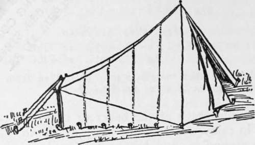
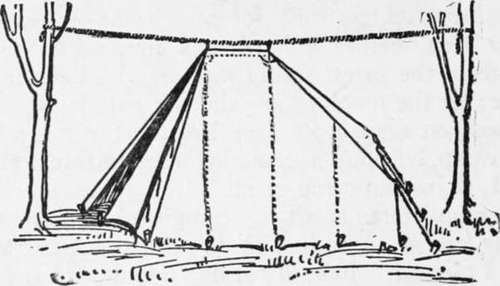
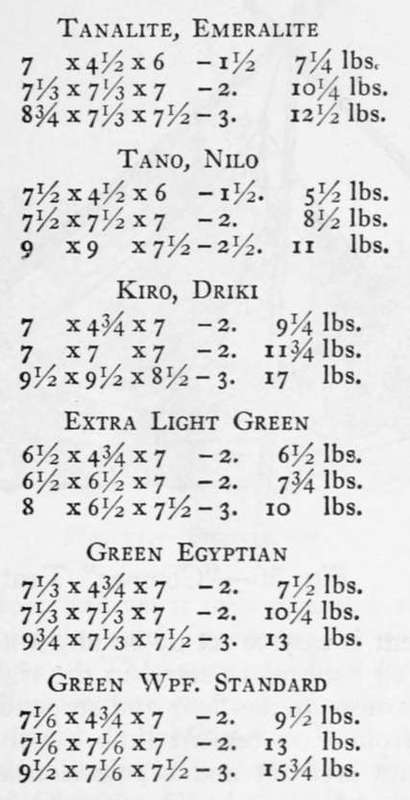
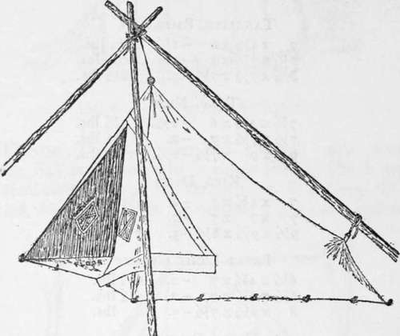
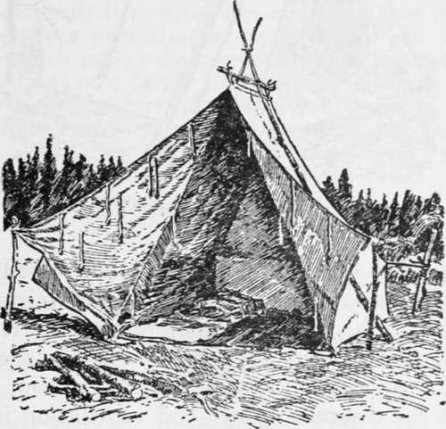
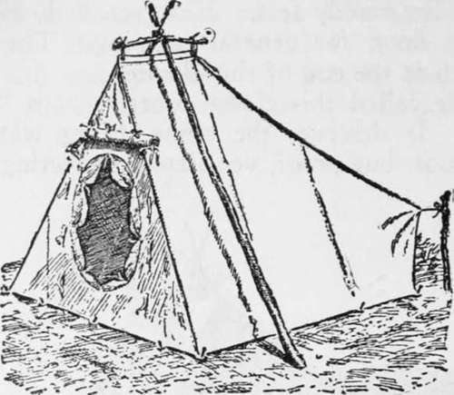

Types Of Light Tents. Part 7
Description
This section is from the book "Camping And Woodcraft", by Horace Kephart. Also available from Amazon: Camping and Woodcraft.
Types Of Light Tents. Part 7
One advantage of the baker or camp-fire type is that, in rainy weather, one has a dry, open space to move around in, and he can cook under shelter by building a small fire under the awning and feeding it a little at a time.
Such a tent is good for commissary quarters in fixed camp, as it is open and handy to work under. It is not recommended for parties that move frequently, nor for " bad fly-country".
But in a cool climate, where wood is plentiful and mosquitoes scarce, then for me the open lean-to or baker tent, before a hardwood fire, with the free breath of the forest filling my lungs! Let the sleet drive; let the mercury go where it listeth; my axe is my weapon against old Jack Frost. For me, a hunter's camp without a good log fire, burning all the night, is just no camp at all.
But understand: all my Camping has been where I was free as an Indian to do with the forest whatever I pleased. I could cut down and burn any tree, any number of them — sweet birch, hickory, white ash, sugar maple, anything — heedless of what such timber might be worth if ever it got to market. I could burn choice wood when I did not need fire; burn just for the incense and comradry of it all.
Not so the average camper of to-day. He must cull old dead no-account stuff that he finds on the ground — peradventure he even be permitted to light a fire in the woods at all. Alas! the lean-to, and the hissing red logs that cheered us and kept us cosy through the long frosty nights under the hunter's moon.
Extra Light Green
6 1/2X6 1/2X6 -7 -2. 8 lbs.
8 x6/x6-7 1/2- 1/2.
Green Egyptian
7 1/3 x 7 1/3 X6-7/-2 1/2 9 3/4 x 7 1/2 x6-7 1/2-2 1/2. 13lbs.
Green Wpf. Standard
7 1/6 x 7 1/6 x 6-7 1/2 -2 1/2. 14 lbs.
9 1/2x7 1/6 x6-7 1/2 - 2 1/2. 16 1/2 lbs.
Fig. 64. Canoe Tent with Pole.
Canoe Tents
The old pattern canoe tent (Fig. 64) is erected with a single pole. The front is semi-circular, and the strain from it, pulling forward, does away with the need of a guy rope, unless the whole front is left open to the camp-fire, in which case two guys are run forward on either side of the fire.
Fig. 65. Canoe Tent with Ridge.
A canoe tent with short ridge is shown in Fig. 65, suspended bv a rope. When this pattern is used in the open it is erected on a pair of shears, as in Fig. 68.
These models are advertised as " quick and easy to erect," but a glance at the cuts will show that they take too many pegs and stakes to really belong in that category. Still they are very popular, especially the one with ridge. Dimensions (not including the rounded front), and weights in various materials, are tabulated below. Other sizes and cloths are supplied by outfitters. The two patterns do not vary noticeably in weight.
 .
"Compac" Tent
This is a very light tent for pedestrians, canoeists, or others who want to get along with the least practicable outfit. For its size and weight, I have found it a good thing. It has 9 floor sewed to its walls; so, when the door flaps are snapped shut, nothing can get in. You can defy not only rain and wind, but bugs, flies, spiders, scorpions, snakes, skunks, wood rats, and all other vermin. Ventilation is provided by four little windows covered with bobbinet, with storm flaps that raise or lower from the inside. The cloth is very closely woven, and waterproofed. It may be had in tan, green, or the natural yellowish-white of unbleached cotton.
Fig. 66. "Compac" Tent.
This tent is easy to set up on any kind of ground. If a sapling happens to stand in the right place, peg out the corners of the floor and suspend the peak by its cord from a convenient limb. Otherwise, pitch with shears in front and a pole slanting backward from them, as shown in Fig. 66. Only a few pegs are required.
Being so low and so well braced, this pocket house will stand up against a gale that might overthrow wall tents and send their flies a-kiting. In cold weather it can be warmed by radiation from a camp fire in front. It will accommodate two men and their duffle. Of course it is only high enough to sit up in, but that is all the room one needs on such trips, and it is best for a cloth floored tent anyhow, for it balks muddy feet. However, I do not like a sewed-in floor, for general Camping. The reasons are given at the end of this chapter.
I have called this clever contrivance a " pocket-house." It deserves the name, being waterproof, wind-proof, bug-proof, ventilated, sheltering a space 8 x 6 x 4-2 feet, and yet it rolls up into a 16 x 4-inch parcel, and wreighs, with its rope, only 3^4 pounds.
Fig. 67. Snow Tent.
Snow Tent
This pattern (Fig. 67) gets its name from the steepness of its slopes which makes it shed snow instead of holding it. With front flaps spread as shown, it can be warmed by a fire in front. The back has a low wall, and there is a short ridge; otherwise its qualities are those of a semi-pyramidal tent. It is made in sizes from 6T/2 x 6]/2 x 7*A-2J/2 ft. to g}i x 9^4 x 7J/2-2J/2 ft., and the weights, in different materials, run from yj/2 to 17 lbs. large number of these tents have been used by the Alaska Boundary Survey and by other scientific expeditions. The weights complete are only from i1^ to 2 lbs. greater than for same size of the snow tent.
Fig. 68. Explorer's Tent.
Insect-Proof Tents
I have spoken several times of the desirability of good ventilation in a tent (the smaller the tent, the stuffier it will be if tightly enclosed) and of the necessity of protection from insects in their season. The reader who has followed me thus far can readily understand the construction of an ideal tent, in these respects, for countries like Alaska, central Canada, the tropics, and other places where poisonous or germ-bearing insects abound. I quote from Emerson Hough:
"The most perfect mosquito tent I ever saw I ran across this summer for the first time. It was made in a western city after a design said to have been invented by a member of the Geological Survey in Alaska. If it will work in Alaska it will anywhere. The material was not of heavy duck, but a light Egyptian cotton sometimes callecT
The same model, with sewed-in floor, closed front, an oval door of bobbinet, and a ventilator, is known as the " explorer's" tent (Fig. 68), It is perfectly insect-proof. For the tropics a fly is added. A * balloon silk.' In size 7x7, very high in the ridge and on the walls, the tent in its bag weighs only about 12 pounds. A light waterproof floor is sewn into it. Both ends are sewn into it. On each side there are two large netted windows, affording abundant ventilation. There are flaps arranged for these windows which can be buttoned down in case of rain.
In each end of this tent there is yet another large window for ventilation. The roof projects three or four inches all around over the walls, makirg eaves which keep the water out of the open windows in case of rain. The front door is not a door at all, but a hole, round, and not triangular. This hole is fitted with a sleeve, like the trap of a fyke-net, the sleeve, or funnel, itself being made of light material. You crawl through this hole and, so to speak, pull it in after you and tie a knot in it. At least there is a puckering string by which you can close the bag which makes the entrance of the tent. Once inside it, you have a large, roomy house in which you can stand up with comfort, lay down your beds in comfort, and do light housekeeping. No mosquito can get at you unless you brought it in on your clothes. In case you have done that you can put a wet sock into operation. At first you will think the lent a little close, but soon will see that the ventilation is perfect." (Out of Doors).
Sewed-In Floors
On the other hand, there are objections to a sewed-in floor. Muddy boots make it odious, and hob-nailed ones are its ruin. Every bit of snow that you track in will help make a puddle. A lantern is dangerous in such structures as the last two we have been considering, and one must be very careful about matches. In the case of the explorer's tent, which lacks the windows of the other, you can't cook inside, even on a vapor stove, without risk of disaster, and certainty of steam condensing where it cannot escape. Even the moisture of one's breath amounts to a good deal in the course of a night, and in cold weather it will keep the interior of such a tent constantly damp or coated with rime. As for the sewed-in floor serving as a mattress cover, to keep your bed of browse or leaves in place, if that bed is thick enough for comfort, the tent will not set well, and there will be too much strain on the pegs and seams.
So, anywhere but in extremely bad mosquito coun* try, or on bleak and windy mountains, it is better to have a wide sod-cloth around the bottom of the tent, and a separate ground-sheet, overlapping, that you can roll aside when you want a bare spot, and can take out and wash when it needs it.
Continue to: